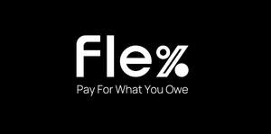

Trade Mark Journal No.2025/012 21 March 2025
UK00004169351 5 March 2025 (9,36)
Mark 1
Mark 2

- Class 9
- Credit cards; Magnetic credit cards; Credit cards [magnetic]; Encoded credit cards; Credit cards [encoded]; Encoded prepaid credit cards; Credit card encoding machines; Terminals for electronically processing credit card payments; Credit cards with a magnetic strip; Software for facilitating secure credit card transactions; Magnetically encoded credit cards; Electronic machines for reading credit cards; Card readers for magnetic cards; Credit card encoding machines [computer peripherals]; Encoded prepaid payment cards; Chip card readers; Coded bank cards; Card readers; Computer card adapter.
- Class 36
- Credit card and debit card services; Credit card verification; Bank card, credit card, debit card and electronic payment card services; Credit card and payment card services; Charge card and credit card services; Credit and debit card services; Credit card services; Issuance of credit and debit cards; Credit card payment processing; Processing of credit card payments; Issuance of credit cards; Credit cards (Issuance of -); Credit and cash card services; Credit card payment services; Issuing credit cards; Issuing of credit cards; Issue of credit cards; Provision of credit cards; Electronic credit card transactions; Credit cards services; Credit card validation services; Credit card management services; Management of credit card services; Electronic credit card transaction processing; Processing credit card transactions for others; Processing of electronic credit card transactions; Credit card transaction processing services; Debit card services; Credit card advisory services; Processing of debit card payments; Provision of credit card services; Processing of payments in relation to credit cards; Debit card payment services; Cash replacement rendered by credit card; Credit card protection and registry services; Debit card validation services; Bank card services; Credit rating; Credit bureaus; Financial services related to the issuance of bank cards and debit cards; Processing debit card transactions for others; Cash card services; Credit insurance; Payment card services; Credit bureau; Credit unions; Credit financing; Financial services for the management of credit cards; Insurance services relating to credit cards; Financial services relating to credit cards; Credit brokerage; Automated banking services relating to credit card transactions; Provision of information relating to credit card transactions; Issuance of prepaid gift cards; Credit leasing; Payment transaction card services; Arranging of credit; Credit arranging; Arranging credit; Credit bureaux; Credit services; Credit rating services; Loan and credit services; Credit and loan services; Provision of credit; Provision of credit rating; Financial information services relating to stolen credit cards; Issuing of letters of credit; Credit (Issuing letters of -); Letters of credit (Issuing -); Charge card services; Credit scoring services; Processing charge card transactions for others; Cheque guarantee card services; Instalment credit financing; Issue of letters of credit; Credit consultancy; Credit consultation; Arranging of credit insurance.
Kapoor Ventures Limited